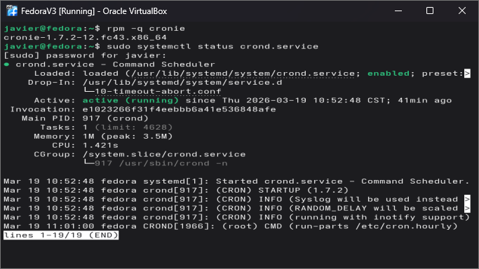
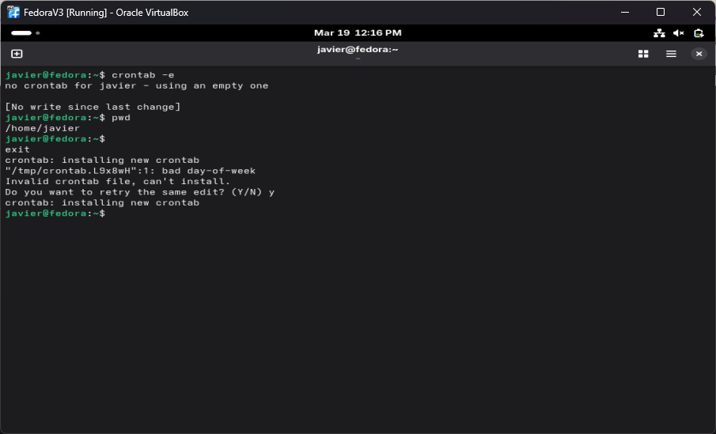
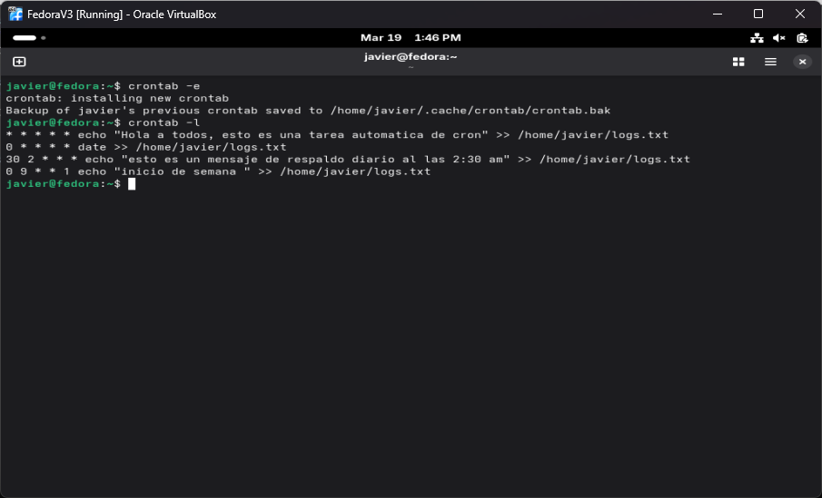
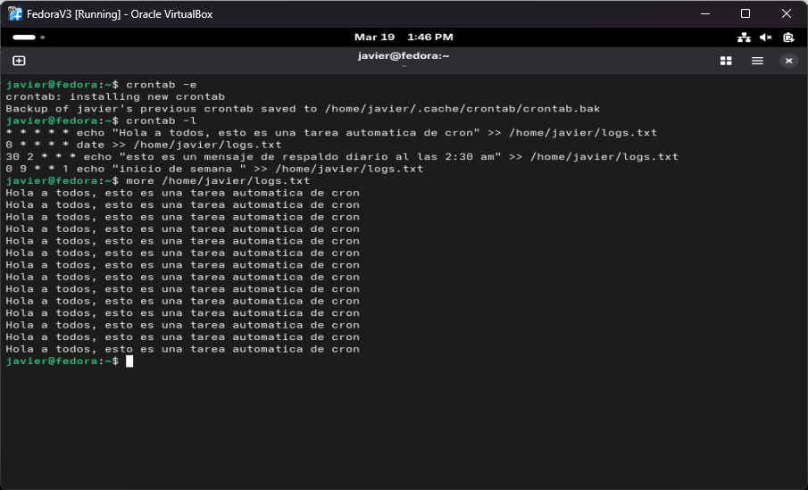

Laboratorio en clase #16: Daemons y procesos cron
1. Objetivos
Objetivo General
Entender los procesos automãticos en Linux, Daemons y crons
Objetivos Específicos
- Revisar que
cornieeste instalado en el sistema. - Checar que el servicio de
croniesse encuentren activos en el sistema. - Crear tareas
cron.
2. Investigación y Marco Conceptual
Daemons
Los daemons son procesos que se ejecutan en segundo plano dentro de un sistema operativo, sin interacción directa con el usuario. Su función principal es gestionar servicios y tareas continuas, como la administración de red, servidores o monitoreo del sistema, garantizando que estos operen de manera estable y eficiente.
Crons
Cron es un programador de tareas que permite ejecutar procesos de forma automática en momentos específicos o en intervalos definidos. A través de los llamados cron jobs, es posible automatizar actividades repetitivas como respaldos, actualizaciones o mantenimiento del sistema.
La sintaxis de cron se compone de cinco campos que definen el momento exacto en que se ejecutará una tarea, seguidos del comando a ejecutar: minuto, hora, día del mes, mes y día de la semana. Cada campo acepta valores numéricos dentro de un rango específico o caracteres especiales como * (todos los valores), , (lista), - (rango) y / (intervalos), lo que permite programar tareas con gran precisión. De esta forma, una línea en crontab indica tanto la periodicidad como la acción a realizar, facilitando la automatización de procesos dentro del sistema.
* * * * * comando
│ │ │ │ │
│ │ │ │ └── Día de la semana (0 - 6) (domingo = 0)
│ │ │ └──── Mes (1 - 12)
│ │ └────── Día del mes (1 - 31)
│ └──────── Hora (0 - 23)
└────────── Minuto (0 - 59)
3. Desarrollo Técnico
Paso 1. Revisar que cornie este instalado en el sistema.
Antes que nada se debe verificar que el servicio de cronie ya se encuentre en el sistema. Para eso se utiliza el comando rpm -q cornies. En caso que no se encuentre en el sistema se tendria que instalar con sudo dnf install cronies -y.
Paso 2. Checar que el servicio de cronies se encuentre activo.
Ya que se tengan los cronies instalados en el sistema se debe revisar que el servicio se encuentre activo. Con el comando sudo systemctl status cronies te muestra si el servicio esta apagado o encendido. En la Figura 1 se muestra tanto el paso 1 como el paso 2.
Paso 3. Crear cron para cada minuto.
Para poder crear un cron se debe utilizar crontab para crear las tareas automaticas.
La primera tarea (* * * * *) se ejecuta cada minuto, ya que todos los campos están definidos con *. En este caso, el comando echo escribe el mensaje "Hola a todos, esto es una tarea automatica de cron" y lo agrega (gracias a >>) al archivo /home/javier/logs.txt. Esto es útil para verificar que el servicio de cron está funcionando correctamente o para generar registros constantes.
La segunda tarea (0 * * * *) se ejecuta al inicio de cada hora, es decir, cuando el minuto es 0. El comando date obtiene la fecha y hora actual del sistema y la añade al mismo archivo de logs. Este tipo de configuración se utiliza comúnmente para llevar un registro periódico del tiempo o monitorear eventos a lo largo del día.
La tercera y cuarta tareas están programadas para momentos más específicos. La expresión 30 2 * * * ejecuta un mensaje a las 2:30 AM todos los días, simulando un aviso o registro relacionado con un respaldo diario. Por otro lado, 0 9 * * 1 se ejecuta a las 9:00 AM cada lunes, escribiendo el mensaje "inicio de semana" en el archivo, lo cual puede servir como referencia para actividades semanales o inicio de procesos programados.
* * * * * echo "Hola a todos, esto es una tarea automatica de cron" >>
/home/javier/logs.txt
0 * * * * date >> /home/javier/logs.txt
30 2 * * * echo "esto es un mensaje de respaldo diario al las 2:30 am" >>
/home/javier/logs.txt
0 9 * * 1 echo "inicio de semana " >> /home/javier/logs.txt
4. Evidencia de Ejecución




5. Conclusiones y Trabajo Futuro
En conjunto, los daemons y cron constituyen elementos clave para la automatización y operación eficiente de sistemas, ya que permiten mantener procesos activos y ejecutar tareas programadas sin intervención manual.
Trabajo Futuro: Interactuar con los daemons del sistema y crear mas crons complicados.
7. Bibliografía
Reporte generado con ayuda de ChatGPT